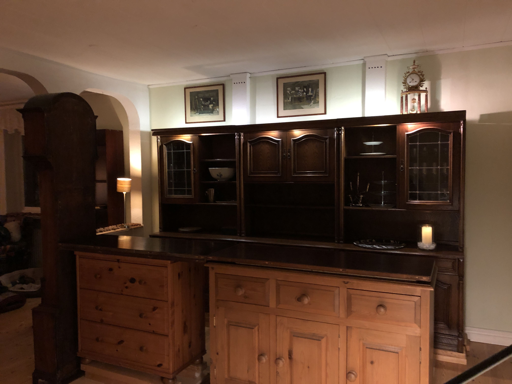

Living the dream - day to day
I've lived in the house for two years now and it's like living in a play house. Nothing is for real, permanent, normal. It's not my home and it's not a business - yet. It's a house where I stay and potter around and play at opening a pub.
The house itself is kind, friendly. From the first day I spent here I have never felt anything but safe and welcome. It smells nice. It is quirky. There is nothing I need to be particularly careful with. That's why it feels like a play house - because I can do with it whatever I want and it seems to like it.
The wonderful people who lived here before left a lot of stuff. Furniture, tools, building materials, interior decorations. That's a good thing because the furniture I brought from Stockholm fit a 63 square metre appartment. The gardening equipment alone was worth a fortune. And everything well looked after and neatly stored. Now, when I want to build a prototype bar, all I have to do is go out into the huge shed and choose some planks, scoure the house for spare furniture and get creative.
I bought a three metre Italian unit on Blocket for the back of the bar. It's a bit low but I've raised it with spare planks and will build a proper plinth for when we're going real. I love the dark wood and the colour is going to be the template for the wood panelling that will cover most of the walls of the pub.
Published: 2021-11-24